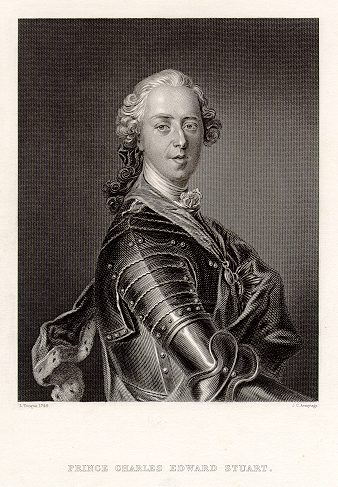
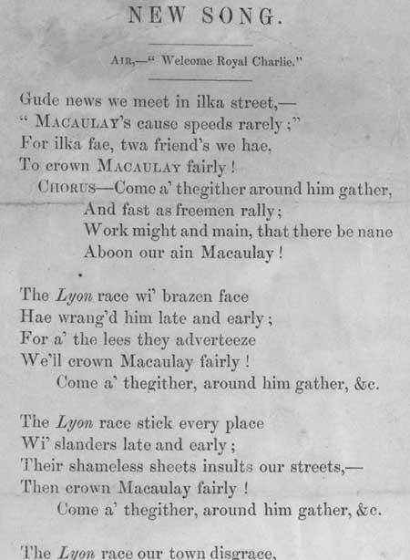
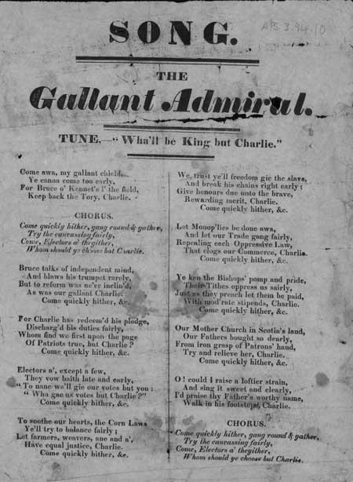

Wha'll Be King But Charlie?
We prefer Our Own King
Se'n Righ a th'againn is fear leinn
Double Jig
Lyrics by Lady Carolina Nairne
Tune
Sequenced by Christian Souchon
Variant
Sequenced by Lesley Nelson-Burns


|
Chorus
Come through the heather, Around him gather, Ye're a' the welcomer early Around him cling wi' a' your kin, For wha'll be King but Charlie? Come through the heather, Around him gather, Come, Ronald, Come Donald, Come a' and crown your rightfu' King! For wha'll be King, but Charlie? 1. The news frae Moidart cam' yestreen, Will som gar mony ferlie, For ships o' war hae just come in. And landed Royal Charlie! 2. The Highland clans, wi' sword in hand, Frae John o'Groats to Airlie, Ha'e to a man declar'd to stand Or fa' wi' Royal Charlie! Ha'e to a man declar'd to stand Or fa' wi' Royal Charlie! Chorus 3. The Lowlands(1) a' baith great and sma' Wi' mony a lord and laird, Hae' declar'd for Scotia's king, and law, Spier ye what, but Charlie! 4. There's ne'er a lass in a' the lan', But vows baith late an' early, She'll ne'er to man gie heart nor han' Wha wadna fecht for Charlie. She'll ne'er to man gie heart nor han' Wha wadna fecht for Charlie. Chorus 5. Then here's a health to Charlie's cause, An' be it complete an' early, His very name our heart's bluid warms, To arms for Royal Charlie! 6. The news frae Moidart cam' yestreen, Will som gar mony ferlie, For ships o' war hae just come in. And landed Royal Charlie! For ships o' war hae just come in. And landed Royal Charlie! Come through the heather, Around him gather, Ye're a' the welcomer Early
(1) In fact, the Lowlanders were cautious and grudged
|
Refrain
Que par la lande, L'on se rassemble, Venez l'accueillir, Faites tous le cercle autour de lui, Il n'est d'autre roi que Charlie? Que par la lande, L'on se rassemble, Clan Ronalds, McDonalds, Accourez couronner le vrai Roi! Il n'est d'autre Roi que Charlie? 1. Plus d'un parmi nous se réjouit, D'apprendre la nouvelle: Hier à Moidart, d'un vaisseau de guerre, Débarqua le Prince Charlie! 2. Et les clans brandissant l'épée, De John o'Groats à Airlie, Comme un seul homme, ils ont tous juré De vaincre ou mourir pour Charlie! Oui, comme un seul homme ils ont juré De vaincre ou mourir pour Charlie! Refrain 3. Grands et petits des Basses Terres(1) De toute la Scotie, Et plus d'un Lord et plus d'un Laird, Honorent ce roi qu'est Charlie! 4. Il n'est de fille c'est certain Qui ne l'ait point promis: De refuser son coeur et sa main A qui ne lutte pour Charlie. De refuser son coeur et sa main A qui ne lutte pour Charlie. Refrain 5. Souhaitons donc à sa cause succès, Et victoire accomplie, Oui, son nom nous fait exulter. Courrons tous aux armes pour Charlie! 6. Plus d'un parmi nous se réjouit, D'apprendre la nouvelle: A Moidart, d'un vaisseau de guerre, Débarqua le Prince Charlie! Hier à Moidart, d'un vaisseau de guerre, Débarqua le Prince Charlie! Que par la lande L'on se rassemble! Venez l'accueillir! Venez!
(Trad. Ch.Souchon (c) 2003)
(1) En fait, les Lowlands, prudents n'apportèrent leur soutien
|
|
The tune belongs to an old Gaelic Song:
"Cha dean
mi'n obair" (I won't do the work). Cha dean mi obair, cha dean mi obair, Chan urrainn mi obair a dheanamh. Chan ith mi biadh 's chan ol mi deoch, Tha an gaol an deighinn mo lionadh. I cannot work, I cannot work, I am unable to work I cannot eat, I cannot drink Love has consumed me.
The tune, common to Ireland and to the Scottish Highlands
|
La mélodie est celle dun vieux chant gaélique:
"Cha dean
mi'n obair" (Je ne peux rien faire). Cha dean mi obair, cha dean mi obair, Chan urrainn mi obair a dheanamh. Chan ith mi biadh 's chan ol mi deoch, Tha an gaol an deighinn mo lionadh. Je ne peux rien faire, je ne peux rien faire, Il m'est impossible de rien faire De prendre aucune nourriture, ni aucune boisson L'amour me met dans cet état.
La mélodie, commune à l'Irlande et aux Highlands
|


Broadsides from the National Library of Scotland Collection
Probable period of publication: 1820-1840 shelfmarks: L.C.1268 and APS.3.94.10
The references to Macaulay, Lyon and Nick,etc. in these lyrics, are now a little obscure, although both pieces seem to refer to some sort of support or vote. The reference to 'Reikie' in the first one would suggest that it is set in Edinburgh, taken from the nickname 'Auld Reekie' and the other refers to the corn laws, slavery, the church and free trade.
Ces 'broadsides' de 1820/1840 sont des pastiches du chant Jacobite servant à des campagnes électorales dont l'une eut lieu à "Reekie", c'est à dire Edimbourg et l'autre contient des références à des sujets d'actualité: les Lois sur les céréales, l'esclavage, l'Eglise et le Libre échange.
Les "Corries" chantent "Wha'll be King but Charlie?"